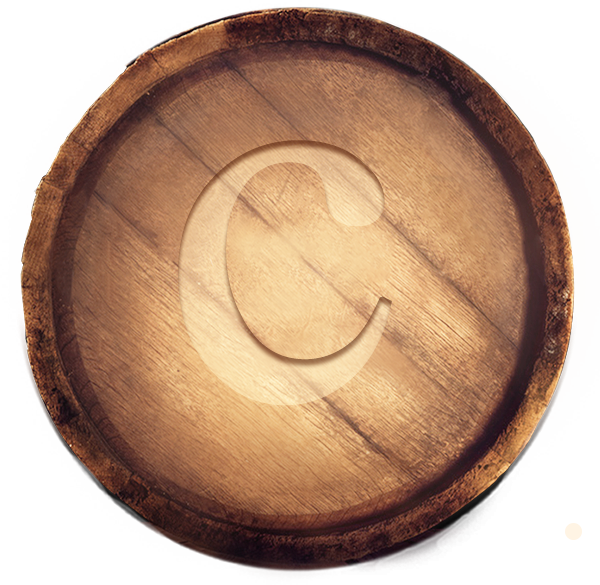
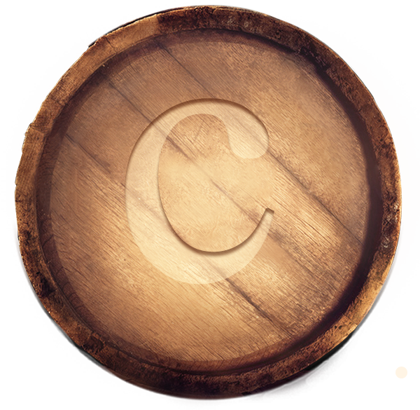

Denominación
de Origen Controlado

¿Qué es?
La Denominación de Origen Controlada es una indicación geográfica utilizada en un producto que tiene un origen geográfico concreto, cuyas cualidades, reputación y características se deben esencialmente a su lugar de origen. Su calidad o características se deben exclusiva o esencialmente al medio geográfico, comprendiendo factores naturales, culturales y humanos.
Pero no solo se trata de geografía, sino de gente que con sus manos siembra la caña, la cosecha, fermenta, destila y envejece.
¿Por qué existe?
La Denominación de Origen Controlada regula y protege esas características propias de un determinado producto, exigiendo que se cumplan los procesos de fabricación y se utilicen las materias primas exactas.
Esta regulación y entramado de normas garantizan al mundo que un producto es único según su terruño.

Acta de nacimiento
En el boletín del Servicio Autónomo de la Propiedad Intelectual (SAPI) N° 459 del 4 de noviembre de 2003 se publicó que la Denominación Ron de Venezuela es una Denominación de Origen del Estado venezolano para aplicarse a la bebida alcohólica de ron y que sólo podrá aplicarse en el concepto exacto de ron dado por las normas COVENIN, a beneficio de los productores que agrupa la Cámara de la Industria Venezolana de Especies Alcohólicas (CIVEA) todo ello por haber cumplido con lo exigido en los artículos 201, 202, 203 y 204 de la decisión 486 de la Comunidad Andina de Naciones.
De acuerdo al acta de la asamblea general celebrada en Caracas el 4 de junio de 2019, los miembros de la Cámara de la Industria Venezolana de Especies Alcohólicas (CIVEA) expresaron su conformidad de que el control y la titularidad de la Denominación de Origen Controlada Ron de Venezuela recayera a partir de la citada fecha en la Asociación Civil Fondo para la Promoción del Ron de Venezuela (FONPRONVEN). De esta manera CIVEA traspasó la titularidad, control, difusión, promoción y otras acciones vinculadas a la Denominación de Origen Controlada Ron de Venezuela a FONPRONVEN.
El Fondo para la Promoción del Ron de Venezuela se creó en 2009 y desde sus inicios ha tenido como objetivo velar porque se cumplan los requisitos de la D.O.C Ron de Venezuela, promocionarla nacional e internacionalmente como producto bandera del país, así como promoverlo a través de la ruta turística Ron de Venezuela.
En agosto de 2019 el SAPI ratificó la Denominación de Origen Controlada que fue otorgada en 2003 según Resolución No. 798 del Servicio Autónomo de Propiedad Intelectual el 04 de noviembre de 2003. Esta actualización permite seguir protegiendo legalmente al ron venezolano en los principales mercados de exportación y en el ámbito nacional.
Organismo regulador
Es el órgano técnico encargado de controlar y certificar el cumplimiento de las condiciones de calidad asociadas a la Denominación de Origen Controlada Ron de Venezuela, así como la generación de normativas necesarias para la verificación de la D.O.C. y evaluación para la admisión de nuevos miembros.
Funciones:
aaaa
Organización:
aaaa